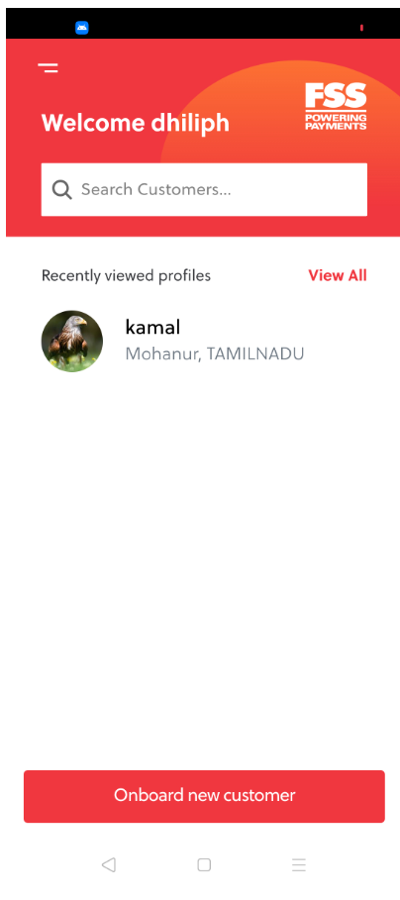
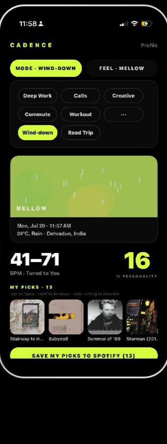
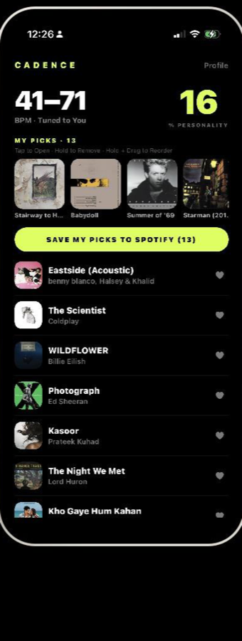
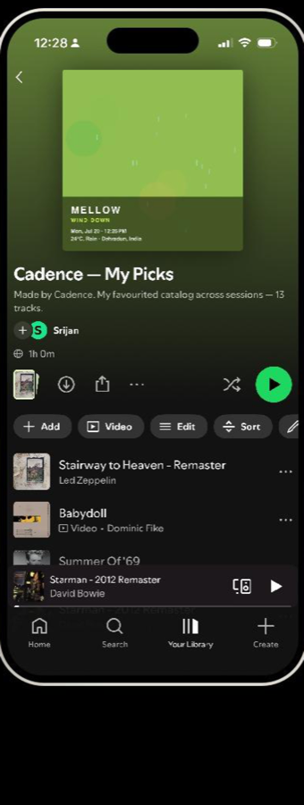

6+ years building fintech, lending and marketplace products — from discovery to roadmap to launch. Four case studies below, each with the problem, the call I made, and what happened after.
Droom's B2C checkout was losing 8 in 10 buyers before they paid. Over three iterations I redesigned the funnel and led the rollout of DroomPay — a payment aggregator now clearing ₹18 Cr across 15,600+ transactions — plus six payment rails (UPI, QR, Card EMI, BNPL, Part Pay, Zero Pay) into the flow.
Every new lending partner meant configuring a loan product from scratch. I streamlined product configurations into reusable, product-centric templates and built the BREs underpinning a ₹95 Cr Capri Loans (CGCL) portfolio across Bharatpe, Lendingkart and Capital Trust as LSP partners.
India's unbanked population needed a channel, not another app nobody could use. I interviewed 1,154 prospects to formulate a financial-inclusion GTM strategy for Grameen Pay — an agent-assisted platform bundling loans, insurance, AEPS and DMT for underserved towns — and piloted it within 3 months, then spearheaded 22 developers and 10+ executives through a national launch.

Most discovery feeds are static until the next batch job. I built Cadence solo, end-to-end — a React Native/Expo app on a Node/Express backend — with a Bayesian recommendation engine that re-ranks results in real time off every skip and like, wired into Spotify OAuth, iTunes and Last.fm for cross-genre discovery and playlist export.



[2–3 sentences on your background, what kind of problems you gravitate toward, and how you work — discovery-heavy, data-driven, cross-functional. Plain and specific, not a resume summary.]
I also keep a repository of product thinking — frameworks, teardowns and essays I add to most weeks.